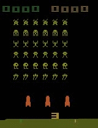

Projects created during my master and bachelor education at DIKU
Title: The effect of different amounts of threads in asynchronous methods for deep reinforcement learning
Abstract
In this paper we present the effects of asynchronous training in Deep Reinforcement Learning methods. An Actor-Critic method using eligibility traces has been implemented to solve the CartPole problem, and the Asynchronous Advantage Actor-Critic (A3C) algorithm, have been implemented to solve both the CartPole problem and to play Atari games. The results from the A3C method show it is possible to achieve an increase of 631,27\% in the number of performed actions for several Atari games, while maintaining the same stability in learning as a single-threaded approach. However, when the A3C algorithm was applied to the CartPole problem we only achieved a speed-up of 15,09% in time spent training. The results indicated that the advantages of asynchronous learning are only present, when each thread can perform a meaningful amount of work between each asynchronous update.
The project is available here.
Title: Normalisation of T1 Brain Images using Deep Learning
Abstract
When a brain is scanned by an MRI machine, the image can be corrupted by a low-frequency signal, that can alter some of the pixel values - a so-called bias field signal[Kur+05]. Al- gorithms that depend on precise pixels values in images can, therefore, produce misleading results. Thus, before image processing algorithms can be used with satisfactory results, a pre-processing step is required. In this project we investigate the possibility of removing the bias field signal using a deep learning approach.